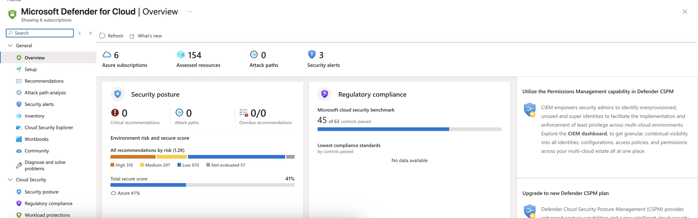
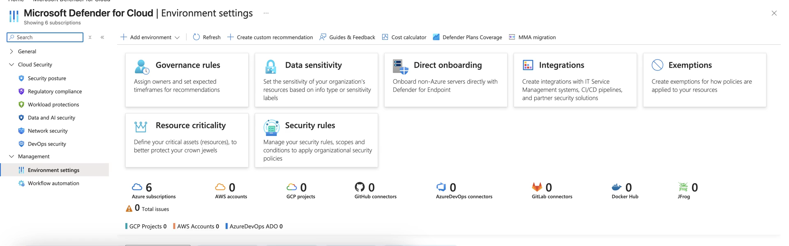
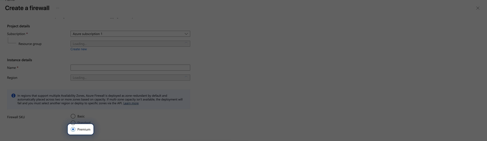

SC-100 · Domain 3 — Design Security Solutions for Infrastructure
Infrastructure
Security
The architect's largest infrastructure block — across on-prem, Azure, AWS & GCP, never Azure alone.
POSTURE → ENDPOINTS → NETWORK & SSE
Area A · Posture managementNETWORK INTELLIGENCE · SC-100
Defender for Cloud, MCSB & Secure Score
See your security state everywhere
Grounded · Microsoft Defender for Cloud
One CNAPP, two functions
CSPM is config hygiene; CWPP is workload threat protection — across Azure, AWS, GCP & on-prem. MCSB is the default standard and the basis of Secure Score.
Exam trap: two Secure Score models — classic (Azure portal) and risk-based Cloud Secure Score (Defender portal, asset criticality).
portal.azure.com — Microsoft Defender for Cloud · Secure Score

Area A · Plan selectionNETWORK INTELLIGENCE · SC-100
CSPM tier & CWP plans — the design decision
Which protection, enabled where
portal.azure.com — Defender for Cloud · Workload protection plans

Grounded · Workload protection plans
Free vs. paid, then per-workload
Foundational CSPM is free & default. Defender CSPM (paid) adds attack paths, AI posture, risk prioritization, agentless scanning.
CWP = per-resource Defender plans — Servers P1/P2, Containers, Storage, Databases. Select by workload & risk.
Area A · Hybrid & multicloudNETWORK INTELLIGENCE · SC-100
Azure Arc — the control plane for non-Azure
"On-prem or other-cloud needs Defender" → Arc
1
Project into Azure
Arc makes on-prem & other-cloud machines and clusters first-class Azure resources.
→
2
Govern consistently
Defender for Cloud, Azure Policy & Sentinel reach Arc resources uniformly.
→
3
Connectors deploy Arc
AWS/GCP multicloud connectors deploy Arc for you; Arc-enabled Kubernetes gets the Defender sensor as an extension.
Remember. Non-Azure servers and non-Azure Kubernetes get Defender coverage through Azure Arc.
Area A · ExposureNETWORK INTELLIGENCE · SC-100
Defender EASM & Security Exposure Management
From compliance to exploitable paths
- Defender EASM — outside-in. From discovery seeds, indexes internet-exposed domains, IP blocks, hosts & ASNs — the shadow IT "unknown unknowns".
- Security Exposure Management — the unifying CTEM layer. Attack paths (incl. hybrid on-prem→cloud), attack surface map, choke points, security insights & initiatives.
- vs · Secure Score asks "how compliant against MCSB?"; Exposure Management asks "what are the real paths to my crown jewels, and where do I cut them?"
Area B · EndpointsNETWORK INTELLIGENCE · SC-100
Servers, clients & Windows LAPS
Harden what runs the workloads
- Servers (Windows + Linux, Azure + Arc) — Defender for Servers with the MDE sensor, vuln management, agentless scanning, FIM; MCSB security baselines measured continuously.
- Clients & mobile — Defender for Endpoint + Intune: ASR rules, controlled folder access, network / web / exploit protection.
- Windows LAPS — rotates & backs up the local admin password to Entra ID / AD; mitigates pass-the-hash. Entra-joined or hybrid-joined only — registered is not supported.
Area B · WorkloadsNETWORK INTELLIGENCE · SC-100
IoT/OT, containers & the platform tiers
Devices that can't run an agent, and the layers above
- OT/ICS → Microsoft Defender for IoT — agentless, network-layer sensors; protocol / anomaly / industrial-malware detection; MITRE ATT&CK for ICS; Sentinel integration. Not endpoint agents.
- IaaS → PaaS → SaaS — responsibility shifts toward Microsoft; SaaS governed via Defender for Cloud Apps + the SaaS Security initiative.
- Containers — Defender for Containers: image scanning, runtime detection, Kubernetes posture via Azure Policy for Kubernetes (AKS, Arc, EKS, GKE). Plus Azure AI services security.
Area C · Network designNETWORK INTELLIGENCE · SC-100
Network designs at architect altitude
Reinforce posture & endpoints — don't bypass them
SEGMENTATION / MICRO-SEG
DENY-BY-DEFAULT EGRESS
PRIVATE LINK / ENDPOINTS
ENCRYPTION IN TRANSIT
AZURE FIREWALL · IDPS
Design intent. The network path is the third reinforcing layer — Defender for Cloud network recommendations & MCSB carry the prescriptive controls.
Area C · Security Service EdgeNETWORK INTELLIGENCE · SC-100
Global Secure Access — the SSE solution
Internet Access (SWG) + Private Access (ZTNA)
Grounded · Microsoft Global Secure Access
Identity-aware, perimeter-free
Entra Internet Access = identity-centric SWG: web content filtering, TLS inspection, threat-intel, cloud firewall, security profiles linked to Conditional Access; secures cross-tenant Microsoft traffic.
Entra Private Access = ZTNA — private apps, no VPN. Universal CA targets the Microsoft & Internet tunnels; Private Access is per-application.
portal.azure.com — Global Secure Access · Network

RememberNETWORK INTELLIGENCE · SC-100
Infrastructure Security in six rules
The architect's infrastructure floor
- 1 · Defender for Cloud = CSPM + CWPP; MCSB is the default standard. Two Secure Score models — classic & risk-based.
- 2 · Foundational CSPM is free; attack paths & AI posture need paid Defender CSPM.
- 3 · Azure Arc onboards non-Azure servers & Kubernetes for Defender coverage.
- 4 · EASM is outside-in; Exposure Management maps the exploitable paths Secure Score can't.
- 5 · Harden servers/clients; Windows LAPS for local admin; OT/ICS = Defender for IoT, not agents.
- 6 · Global Secure Access = Internet Access (SWG) + Private Access (ZTNA).
Hands-on · 1 of 2NETWORK INTELLIGENCE · SC-100
Do this
Map the posture stack to one estate
GOAL · Produce a one-page Domain 3 design artifact
- For Azure + AWS + on-prem servers + an AKS cluster, write the design: MCSB on by default, Defender CSPM for attack paths.
- Use Azure Arc to onboard the non-Azure servers and Kubernetes.
- Name the specific CWP plans per workload — Servers P2, Containers, Storage.
✓ DONE WHEN · Every workload has a named protection plan and an onboarding path
Hands-on · 2 of 2NETWORK INTELLIGENCE · SC-100
Do this
Design the SSE cutover
GOAL · Replace a legacy VPN-and-proxy design with Global Secure Access
- Entra Private Access publishes the private apps — no VPN.
- Entra Internet Access as the SWG — TLS inspection & web content filtering linked to Conditional Access.
- State which traffic forwarding profiles you enable; Universal CA vs. per-app Private Access targeting.
✓ DONE WHEN · The design names every profile and shows no remaining broad VPN tunnel